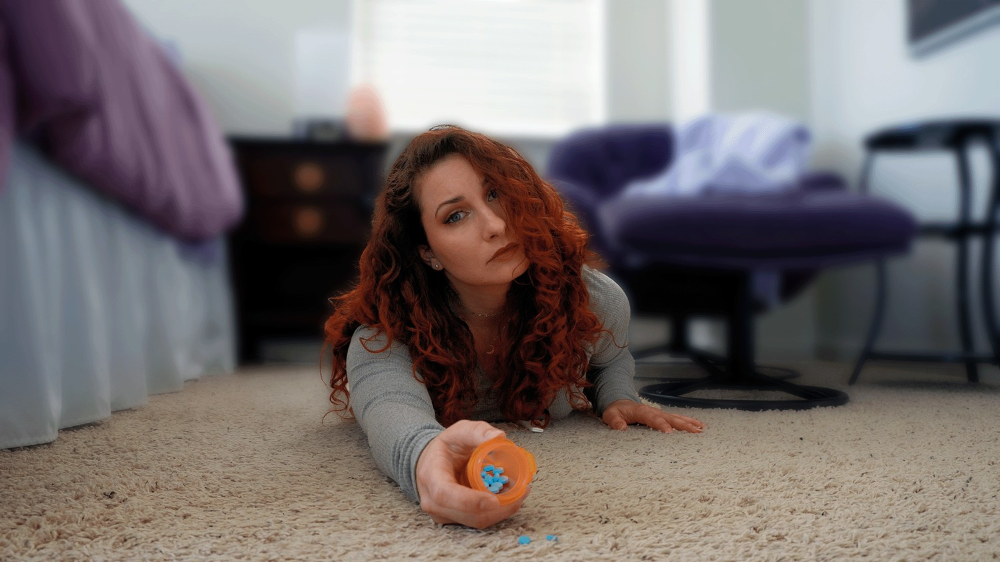

Adderall ruined my life.
Usually when people say that it’s because they got addicted and started taking higher and higher doses to get high, but that’s not what happened to me. I only ever took my very low prescribed dose, exactly as directed by my doctor, and it temporarily disabled me. And this is that story. Disclaimer: I don’t think this will happen to most people, and I know some people swear by Adderall improving their quality of life. So I’m not here to fear monger! I’m just telling my story and educate people about a possible consequence of taking strong stimulants.
How I was diagnosed with ADHD

My whole life I joked that I had ADD (as it was called back then) but I never actually thought too much about it. My mom didn’t even believe that ADD or ADHD was a thing so getting tested wasn’t on the table. It was hard for me to stay attentive during class, but despite that I always got good grades, so it wasn’t too much of a concern. Until I graduated college and started working an office job. My first job out of college was as an environmental scientist for Cal Fire, where I often had to facilitate 8 hour long meetings. And it made me want to scream at the top of my lungs!! I don’t understand how, but everyone else in that room would sit perfectly still and attentive. They would elect to skip their breaks, so they’d sit there for 4 hours straight until lunch. Not moving. Completely focused. While I wanted to die! I would be swiveling in my chair, taking my pen apart, investigating every curl on my head, and getting up to “go to the bathroom” a million times just so I could leave the room and walk around. I hated every second of it and I don’t know how everyone else was able to sit so still and pay perfect attention. I eventually switched jobs to where I work now as an environmental scientist for the Department of Water Resources, and the work is a lot better than my last job! I get to switch between different tasks and don’t have meetings that run longer than 2 hours. But it was still really hard for me to focus on my work.
And then in 2019 I stumbled upon a youtube video that talked about how ADHD presents differently in women than it does in men. I learned about all kinds of symptoms I didn’t realize were a part of ADHD, like emotional dysregulation, social masking, fidgeting, etc. Keep in mind that back then content about ADHD wasn’t nearly as widespread as it is today, so this was all brand new to me! I had always thought ADHD was just the hyper boys in class who wouldn’t stay in their seat and were always throwing things. So learning what ADHD actually is led me down a rabbit hole of researching everything to do with it, and I was dumbfounded by how perfectly it fit me! But I didn’t want to self diagnose, and I was really curious if I actually had it or not, so I sought out a diagnoses from my doctor. After many months and long tests, I found myself in a room with a psychiatrist who confirmed I do indeed have ADHD. One of the first things she asked me was “So you’re here because you want pills?” That wasn’t my intention at all, I just wanted to know if I had ADHD or not, but over the long process of seeking a diagnosis I also went down a rabbit hole of learning everything to do with ADHD medications like Adderall. I was raised by a mom who was very anti pharmaceutical so this wasn’t a decision that I would make lightly, but knowing there was a magical pill that could help me focus was too enticing. I decided what the hell! Let me try it one time, just to see what it’s like. And that was the biggest mistake of my life. There is no just once when it comes to highly addictive pills.
Adderall’s effects

My psychiatrist had me start with the smallest dose and work up until I felt an effect. I followed her directions and 15mgs was when I started to notice a difference, and it was incredible! Being on adderall felt like I had gotten the world’s greatest sleep you could ever possibly have. It’s a stimulant, but it’s not even comparable to coffee in the slightest. When you’re tired and you drink coffee, it might help you be more alert, but you can still feel the tiredness behind your eyes. But adderall made me feel more awake than I ever had in my life! Which made me feel healthy. I remember that specifically, it made me feel like I was really really healthy because of how much energy I had. That was my favorite part. And of course it helped me focus at work, which was also amazing. I felt like I had a normal brain for the first time, I could actually focus on my work without getting distracted or feeling bored out of my mind. But I also felt like my personality changed. I had little patience for small talk with my coworkers because I felt like I was wasting my time. I didn’t find the little jokes they cracked to be funny anymore, so I felt like I was acting while talking to them. Logically I knew I’d normally react a certain way, so I’d force myself to respond how I thought I would pre-adderall. I’d also get irritated easier. And I become more promiscuous. Plus I had various other effects, like stomach upset and feeling like I was floating when I walked. But the most detrimental one was insomnia.
Insomnia

At first I would only take adderall on workdays, and on weekends I’d take a break from it, but then I’d crash SO hard on the weekend! I’d become an absolute zombie, exhausted as hell, brain fog, and I would feel generally unwell compared to the “healthy” I’d feel from having lots of energy when on adderall. I later realized that this extra energy I got from the pill was just borrowing from the future. I’d have tons of energy when on it, and then zero energy off it. So after consulting with my psychiatrist we decided I should take Adderall on the weekends too, to help me get my errands and chores done. Which worked for a few months, but eventually the lack of sleep caught up with me. I already have insomnia regularly, and one common side effect of most ADHD medication is insomnia, so you give a pill that causes insomnia to someone who already has insomnia and it’s a recipe for disaster! I would often only sleep like 4 hours a night of incredibly light sleep. But the beauty about adderall is it would wake me up like nothing else and give me abundant energy, so it didn’t matter that I wasn’t sleeping because one pill would solve that and have me running around like the energizer bunny!
But eventually this lack of sleep caught up with me. I could start to tell I was tired despite the adderall giving me energy, just like how coffee feels when you’re tired. I felt like my mood was becoming more depressed, as often happens when I don’t get enough sleep. And I felt like my brain was more airy. But I was still able to focus and keep going. I would sometimes take the weekends off adderall to try and catch up on my sleep, and I’d sleep for like 14 hours straight, and then of course wake up feeling like a zombie. I realized this wasn’t sustainable so I tried to get off the pill a few times but I’d never last longer than a week because even after sleeping all weekend, going back to work without the pill made it SO hard to focus! I would be below my ADHD baseline which made getting any work done such a struggle, so I’d always get back on the pill a week later just so I wouldn’t get fired. Plus I would deeply miss the energy it gave me, which again always made me feel so healthy! Which is ironic because it was doing the exact opposite of improving my health. I actually remember on a few occasions a voice in my head was screaming “THIS IS RUINING YOUR LIFE!!” but I just ignored it and carried on because I was too dependant on the pill.
Disability

Until one day I was walking to work and the joints in my left foot hurt with every step I’d take. I work downtown so I’d have to park on the street and then walk about 10 minutes to my office building, and when I arrived I was crying. At the time I’d arrive at work super early so it was just me and one supervisor in the building, and I showed up at his desk with tears in my eyes telling him what was wrong. I was actually crying less about the pain but more about the memories I had of this happening to me in the past. Joint pain is something I’ve experienced ever since middle school, among many other health issues like severe muscular fatigue. And I remember back in High School being forced in PE to go beyond what was healthy for my body, because no one believed that something was wrong with me. Anytime I’d go to the doctor to try to figure it out they told me it was just stress. And my mom would tell me I was just lazy! So this joint pain in my foot was giving me flashbacks to times I’ve experienced something similar in the past but was forced to carry on like nothing was wrong. Typically when I’d have joint pain like this it would go away after about a week, but this time it kept getting worse and worse.
Until my 24th birthday, I threw a party with all of my friends and got drunk, which of course means I got a shitty night of sleep from the alcohol. And when I work up in the morning, my whole life changed. Every joint in my body was screaming in pain. I got up to go to the bathroom and I fell on the floor because the weight of my body on my ankle joints was way too much. I tried to crawl to the bathroom but my wrist joints couldn’t support my weight either, so I crawled on my forearms to get to the bathroom, which still hurt like a bitch, and struggled to get up on the toilet. Afterwards I crawled to the kitchen and dragged a dining room chair in, much to the dismay of my downstairs neighbors, so I could sit and grab something to eat. And as I sat there in the kitchen wondering what the hell I was supposed to do with my day, I listened to my neighbor outside talking about how it was such a beautiful sunny day, while I was stuck inside my dark apartment, in pain, surrounded by the disastrous state of my apartment after my party. Normally after a party I’m excited to clean and get my apartment back into shape, but instead I was forced to sit among the mess. I even asked a friend if she could help me out but she said she was too hungover so instead I just had to wait for the day to pass by. And obviously I realized I needed to schedule a doctors appointment ASAP, but the soonest one wasn’t available for a couple days, and I didn’t feel like paying ER prices in America. So I waited.
Going to the doctor
My friend Dennis offered to drive me to the doctor since I obviously wouldn’t be able to get there alone, which I’m eternally grateful for! He helped get me a wheelchair to bring me from the car to the doctor’s office. Which side note, finding out how to get a wheelchair is a whole story on its own which required 6 phone calls and many tears as every customer service person told me “that’s not something they do” as I tried to explain that I can’t walk! And won’t be able to physically make it to my appointment without a wheelchair. Turns out they’re just in the lobby for anyone to grab… No one at Kaiser had that information, instead I was told I was sorry out of luck by 5 people before someone actually gave me the right info! I hate the medical industry with a passion and I’m still traumatized about just trying to figure out how to make it to that appointment. So at this point since a couple days past most of my joints still hurt but calmed down to the point that I could use them, but I still couldn’t put any weight on my foot. It was probably an 8/10. And that is when I was diagnosed with fibromyalgia. It’s something I’ve had my entire life, but it took this horrible flare up to finally get a diagnoses. I’ve since learned that many things make my fibromyalgia flare up, but lack of sleep is one of the huge reasons, so the many months of getting only 4 hours of incredibly light sleep was enough to completely fuck up my body. After I was diagnosed the doctor almost sent me away without any mobility aid to help me walk until I had to beg for help in tears, so I got a boot brace and crutches, which I’m so grateful for because I could finally walk around my apartment again.
Quitting Adderall

Obviously I realized after this incident that I needed to quit adderall since the insomnia it caused is what got me here. And as I previously mentioned, coming off adderall would make me crash and feel like a zombie. Well joint pain isn’t the only symptom of fibromyalgia, chronic fatigue and brain fog are big symptoms too. They also call it “fibro flu” because having a flare up makes you feel like you have the flu where your muscles ache and your brain doesn’t work and you just need to stay in bed all day. Well this went on for months. The chronic fatigue was debilitating, and it was a monumental task trying to get my brain to comprehend my work. So I thankfully was able to get a reasonable accommodation to work from home which was an immense help with not only the joint pain, but also with the limited energy I had in a day. Working from home is a lot less strenuous than physically making it to the office. And since the severe brain fog was giving me such a hard time completing my tasks, my supervisor was understanding and delegated some of my harder tasks to my coworkers. Thank god for that! I don’t know how I got so lucky working at a job that made so many accommodations for me but I really lucked out, because I easily could have lost my job if I was working elsewhere.
And while I was dealing with all of that I was also dealing with the addiction to the drug. Quitting was not easy, at all. It was one of the hardest things I’ve ever had to do. Luckily I had the motivation because it made me literally unable to walk. But since coming off adderall caused me to be below my ADHD baseline, and I knew that taking just one pill would give me an abundance of energy and mental clarity, it was so so so hard on the bad days to not take that magic pill. Especially because at this point I still had my prescription in the house. I was relying on pure will power to not take it. The cravings would SCREAM at me to please just take one pill, and it would eat at me to say no. So I wrote a note in my phone about all the reasons why adderall is bad for me, and I would read it when I had a craving, which helped me to just sit with the discomfort and let it pass over time.
I actually originally didn’t even intend to completely quit adderall! The idea of quitting forever was too scary for me because I loved adderall, so I told myself I’d only take a 1 month break to catch up on sleep, and then I’d be able to take my magical pill again. But once a month passed and my fibromyalgia wasn’t better I extended it to 3 months, and then 6, and then a year. And by that point the addiction had mostly subsided and I realized I could never take adderall ever again. But I had to trick myself to get to this point, living for the promise that after some time I’d be able to take a pill again because I couldn’t fathom a world where I never took it ever again. I’d feel so much despair at that thought. It took a long time for the daily cravings to end, and after a year I’d still sometimes have occasional thoughts while working that I should pop an addy. But it’s now been over 5 years and I literally never think about taking adderall, and know that I never will again. It’s just not an option for me, and I feel good about that!
Recovery

As for my fibromyalgia, it also took a very long time to recover from the flare up, and 5 years later I still don’t feel as healthy as I did pre-adderall. The doctor who diagnosed me told me that fibromyalgia has no cause and no cure, which is clearly bullshit! So I took matters into my own hands and did as much research as I could. That’s a blog for another time as there were many puzzle pieces together have helped me improve. It took about half a year to get to a relatively stable place, and another year or two till I felt like I was at my new baseline of health. I still have flare ups, just like I did before ever taking adderall even though I didn’t have a word for it back then. But never as severe as the time I completely couldn’t walk. I’m still not able to get as much done as I used to pre-2019, because I feel like I never fully recovered from the horrible flare up that adderall caused. I feel more fragile in general and am still working on increasing my resilience. But I’m actually kind of grateful for this experience because it’s what finally led me to having a diagnoses for my fibromyalgia!
Now I’m not generally pro or anti adhd medication for others. I know there are people out there who swear Adderall fixed their life, that they were useless at executive functioning because their ADHD is really severe, but now they can actually keep on top of their adulting with the help of medication. I think that's totally valid, and not everyone's body is as fragile as mine so you might be able to take Adderall and be healthy. But I think there's a large portion of people out there who would be better off without adderall, yet they stay on it because it's highly addictive. Over time you build a tolerance to adderall and have to take a higher and higher dose to have the same effect, and I’ve heard from many people that they’re back to their ADHD baseline at the highest prescribed dose because they’ve built up a tolerance. But they’re now dependent on it to function because of the crash that happens when they come off it. And since ADHD medication is so incredibly addictive even at a low dose, you can be suffering from side effects and yet convince yourself the pros outweigh the cons, because the drug takes over your brain. It puts thoughts in your head and makes you think about it in a different way than you would when you’re sober. I’ve experienced this myself, it changed the way I thought and made me think that Adderall was my best friend! And even if you don’t seem to have any detrimental side effects right now, it’s always possible for extreme stimulant to lead to adrenal fatigue in the long term. Only you can know deep down which group you fall under, the severe ADHD for whom medication really is a life saver, or the group that shouldn't really be on it but are dependent. At the end of the day I’m not here to tell someone they should or shouldn’t take adderall or any other ADHD medication. But I’ll admit, after what happened to me adderall has definitely left me with a bad taste in my mouth, so I’m not one to recommend it to others lightly.
So this was the story of how my prescribed dose of adderall ruined my life. Not only because of the horrible fibromyalgia flare up, but I can also see how it changed my personality while on it. In my opinion, it's better to create a life and a job that works for your brain, than to try to change your brain to work for your job. Which if you’re curious about, I make content all about health and wellbeing so feel free to check out my other blog posts, or my YouTube channel TheHealingFairee. Thanks for sticking around to the end of my story :) I’m wishing you all the health!